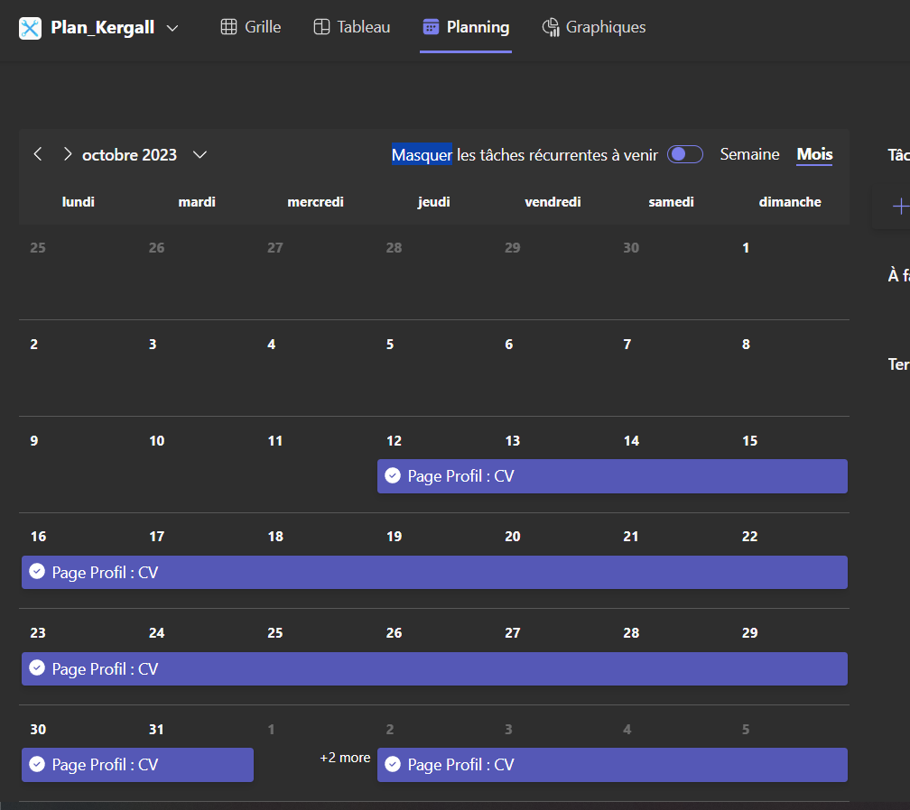
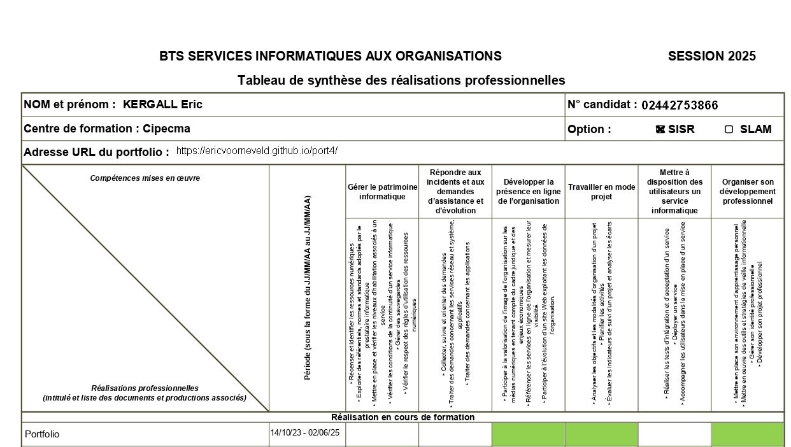

Portfolio
Dans le cadre de ma formation BTS SIO option SISR, j’ai réalisé un portfolio personnel afin de présenter mes compétences, mes projets, mes expériences en entreprise et mes connaissances techniques. Ce portfolio est hébergé en ligne et régulièrement mis à jour. J’ai mené cette réalisation en mode projet, en planifiant les différentes étapes de conception, développement, test et mise en ligne.
Objectifs :
- Concevoir un site web clair, responsive et moderne.
- Présenter mes projets réalisés en formation et en entreprise.
- Valoriser mes compétences techniques et mon parcours.
- Acquérir une expérience concrète en développement web et en hébergement.
- Appliquer une démarche de gestion de projet (planification, objectifs, livrables, mise en production).
Compétences mobilisées
- Mettre à disposition des services: hébergement du portfolio : hébergement du portfolio
- Développer la présence en ligne de l’organisation: conception d’un site web de présentation.
- Travailler en mode projet: planification, étapes de réalisation, gestion des versions et des livrables.
- Organiser son développement professionnel: valorisation de mon parcours et de mes compétences.
Technologies utilisées
- HTML5 : pour la structure et l’organisation du contenu des pages.
- CSS3 : pour la mise en forme, les animations simples et l’adaptation responsive.
- Visual Studio Code : comme éditeur de code.
Conclusion
La création de mon portfolio m’a permis de mettre en application mes compétences en HTML et CSS de manière concrète, sans utiliser de framework. Ce projet m’a également appris à structurer et organiser du contenu de manière claire et professionnelle. Travailler en autonomie sur cette réalisation m’a permis de suivre une démarche de projet complète : conception, développement, test et mise en ligne. Ce portfolio me permet aujourd’hui de présenter facilement mes projets, mes compétences et mon parcours.Documents

